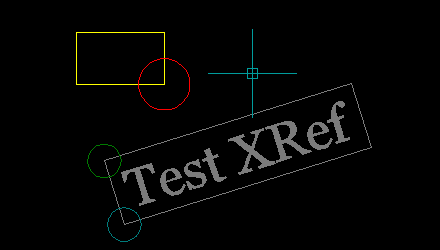

Nested Move
This page is delivered for consistency purposes only, as part of the LeeMac sample module of DynALisp, which shows how DynALisp turns existing AutoLISP programs into a module. The program and its description are the work of Lee Mac, who keeps all the credit for them. The original page, with the latest version, is on Lee Mac's website: https://lee-mac.com/nestedmove.html
| Function Syntax | LM-NestedMove – original syntax: nmove (see aliases) |
| Current Version | 1.2 |
| Compatible with AutoCAD for Mac? | No |
| Compatible with AutoCAD LT? | No |
| Original Page | lee-mac.com/nestedmove.html |
Program Description
This program enables the user to move multiple selected objects nested within a block or xref (nested to any depth), without opening the xref source drawing.
Upon calling the program with nmove at the command-line, the user is continuously prompted to select one or more objects nested within a block or xref to be moved. Similar to the standard AutoCAD move command, the user is then prompted to specify a base point & displacement for the move operation.
The program will then proceed to move the selected object within the parent block definition or xref source drawing, utilising an ObjectDBX interface should the xref source drawing be unopened in the current drawing session.
Upon moving the object: in the case of a block parent, the active drawing is regenerated to reflect the modification to the block definition across all block references in the drawing; for xrefs, the xref source drawing is saved and the xref is reloaded in the active drawing.
The program will account for the position, scale, rotation & orientation of the parent block or xref relative to the base point and displacement vector and will perform successfully under all UCS & View settings.
Please Note: The act of modifying objects within an xref source drawing involves saving the external drawing remotely - this action cannot be undone within the current drawing and any changes to the external drawing must be reset manually.
Note also that when saving drawings through ObjectDBX, drawing files will be saved to the highest version available and drawing file thumbnails will be lost until the next manual save.
Demonstration

Bundled program notes
;;-------------------------=={ Nested Move }==--------------------------;;
;; ;;
;; This program enables the user to move multiple selected objects ;;
;; nested within a block or xref (nested to any depth), without ;;
;; opening the xref source drawing. ;;
;; ;;
;; Upon calling the program with 'nmove' at the command-line, the ;;
;; user is continuously prompted to select objects nested within a ;;
;; block or xref to be moved. Similar to the standard move command, ;;
;; the user is then prompted to specify a base point & displacement ;;
;; for the move operation. ;;
;; ;;
;; The program will then proceed to move the selected object within ;;
;; the parent block definition or the xref source drawing, utilising ;;
;; an ObjectDBX interface should the xref source drawing be unopened ;;
;; in the current drawing session. ;;
;; ;;
;; Upon moving the object: in the case of a block parent, the active ;;
;; drawing is regenerated to reflect the modification to the block ;;
;; definition across all block references in the drawing; for xrefs, ;;
;; the xref source drawing is saved and the xref is reloaded in the ;;
;; active drawing. ;;
;; ;;
;; The program will account for the position, scale, rotation & ;;
;; orientation of the parent block or xref relative to the base point ;;
;; and displacement vector and will perform successfully under all ;;
;; UCS & View settings. ;;
;; ;;
;; Please Note: ;;
;; ------------------------------ ;;
;; The act of modifying objects within an xref source drawing involves ;;
;; saving the external drawing remotely - this action cannot be ;;
;; undone within the current drawing and any changes to the external ;;
;; drawing must be reset manually. ;;
;; ;;
;; Note that when saving drawings through ObjectDBX, drawing files ;;
;; will be saved to the highest version available and drawing file ;;
;; thumbnails will be lost until the next manual save. ;;
;; ;;
;;----------------------------------------------------------------------;;
;; Author: Lee Mac, Copyright © 2013 - www.lee-mac.com ;;
;;----------------------------------------------------------------------;;
;; Version 1.0 - 10-08-2013 ;;
;; ;;
;; - First release. ;;
;;----------------------------------------------------------------------;;
;; Version 1.1 - 26-08-2013 ;;
;; ;;
;; - Modified program to move the 'outermost' nested object within ;;
;; the parent block or xref. ;;
;; - Added ability to select multiple nested objects to be moved. ;;
;; - Added selection highlighting for visual feedback of selected ;;
;; nested objects. ;;
;;----------------------------------------------------------------------;;
;; Version 1.2 - 31-08-2013 ;;
;; ;;
;; - Fixed bug causing the program to crash when a nested attributed ;;
;; block or nested polyline is selected. ;;
;;----------------------------------------------------------------------;;
Command Names And Aliases
As in every DynALisp module, each program of this sample module has one main command, named LM-*, and the original command names of Lee Mac's page are kept as its aliases: they run the same command, and can be added, renamed or removed in Dyl-Suite (saved in Resources\Aliases.csv).
| Command | Aliases | Name |
|---|---|---|
| LM-NestedMove | NMOVE | Nested Move |